ATMOS — Free-Flying Spacecraft Testbed
Caltech laboratory platform: simulation, motion tracking, IoT instrumentation, hardware integration and test workflows.
Open project ↗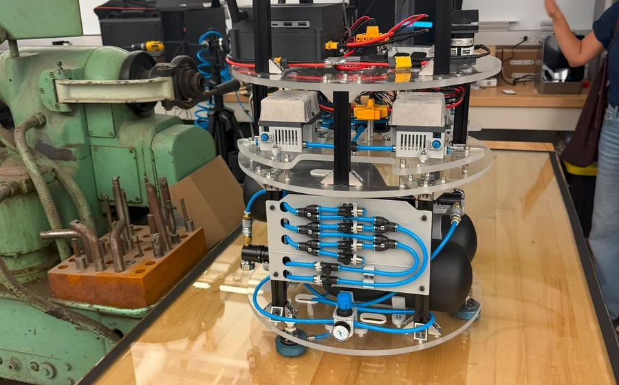
The project page is intentionally broader than the research page. It includes research platforms, competition systems, airspace concepts and course/laboratory builds. Every project listed in the supplied portfolio is represented below.
Caltech laboratory platform: simulation, motion tracking, IoT instrumentation, hardware integration and test workflows.
Open project ↗
Communication-aware multi-UAV digital twin combining ROS 2, Isaac Sim, Sionna and PX4/Pegasus.
Open project ↗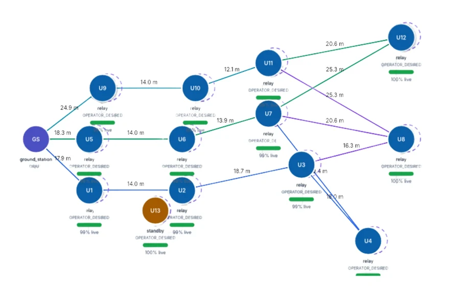
Jetson/ESP32/RealSense sensing infrastructure, AHRS, middleware tuning and reproducible ROS 2 deployment.
Open project ↗
UdeA / Volta descent payload with multi-Pitot sensing, wind-tunnel calibration, CFD and flight reconstruction.
Open project ↗
10k COTS payload, sensing, telemetry integration and launch-day data operations.
Open project ↗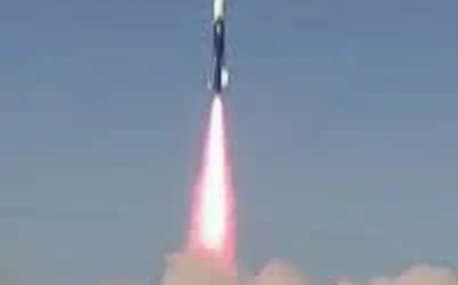
Copernicus imagery to occupancy grid, corridor graph, Blender city and ROS 2/Gazebo execution.
Open project ↗
Remote ID, geofencing, strategic deconfliction and acceptance-test framing presented to the Colombian Air Force.
Open project ↗
Propulsion matching, electrical power budget and flight-competition integration.
Open project ↗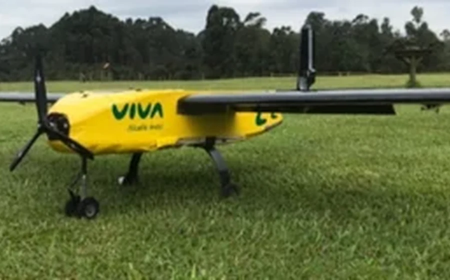
Conceptual electrical and spray-system architecture for an autonomous high-throughput agricultural aircraft.
Open project ↗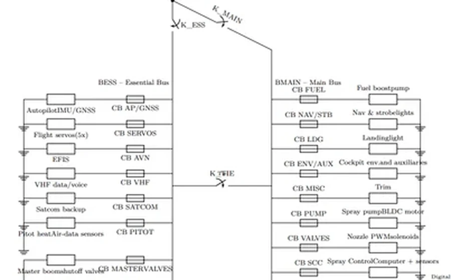
Lightweight hand-launched glider: aerodynamic sizing, stability, fabrication and flight testing.
Open project ↗Instrumented educational rig with staged sensing, DAQ, interlocks, cold-flow and controlled hot-fire demonstrations.
Open project ↗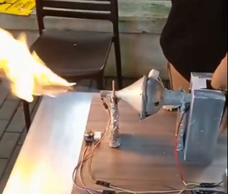
Scaled mechatronic demonstrator of air-distribution / valving logic using Arduino-controlled dampers.
Open project ↗Actuated flap/slat/spoiler section used to characterize lift/drag trends and stall behavior.
Open project ↗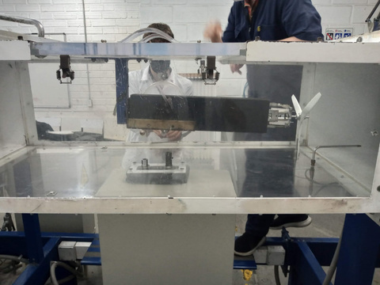
ANSYS-based external-flow simulations for airfoil pressure / flow behavior at elevated speeds.
Open project ↗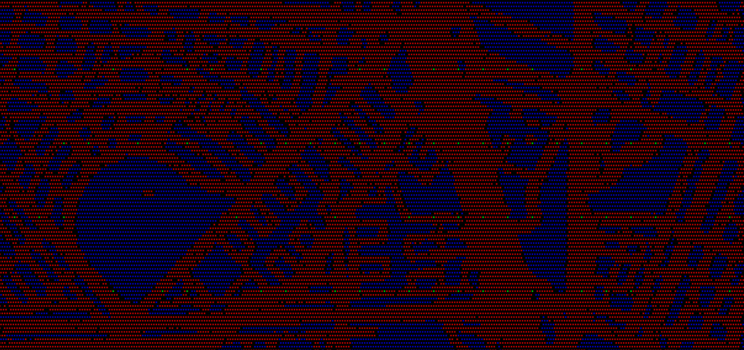
EV3 autonomous competition robot, quick-swap mechanisms, sensor-guided missions and team innovation project.
Open project ↗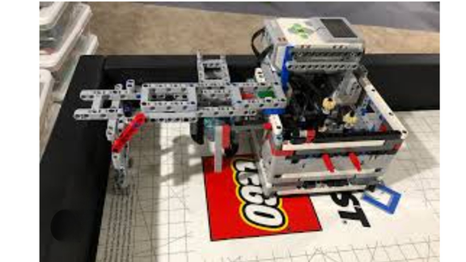
A free-flying spacecraft testbed. This project is separate from the UdeA ALUNA atmospheric probe.


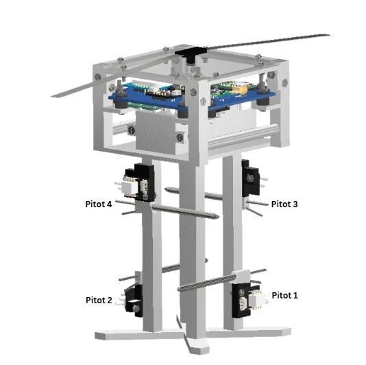


SWARMSYM is the software artifact developed around the VSRP research. It provides a reproducible runtime for multi-UAV communication-service experiments rather than a flight visualizer alone. A mission configuration instantiates the world and swarm; ROS 2 coordinates runtime state; Isaac Sim supplies embodied dynamics / scene fidelity; PX4/Pegasus provide UAV-control semantics; Sionna evaluates communication links; and the service layer decides whether packet progress is allowed.


A Dockerized ROS 2 stack integrating embedded IMU acquisition, Jetson compute, quaternion attitude estimation, remote transport, RealSense depth sensing, RViz2 / TF visualization and synchronized logging. The platform was deliberately built as infrastructure for later multi-sensor fusion rather than presenting an unvalidated EKF/VIO/SLAM stack as finished work.

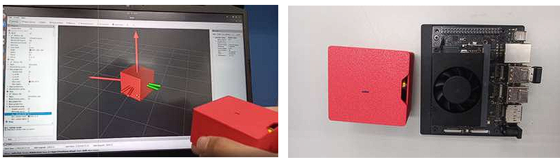
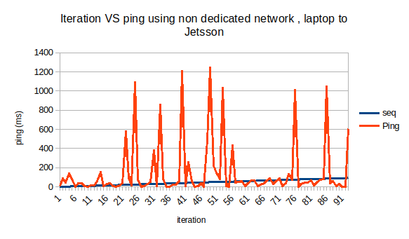
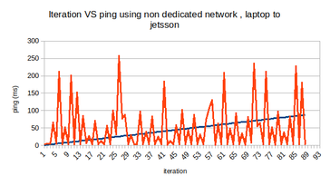

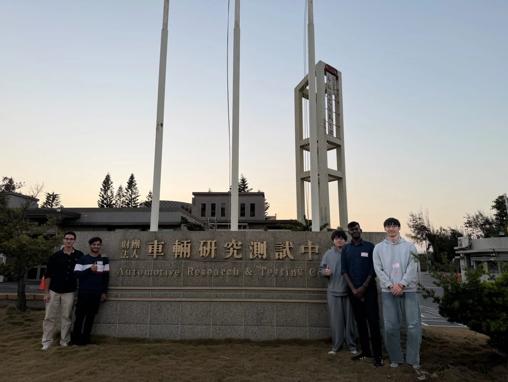
A recoverable atmospheric descent payload instrumented with IMU, GPS and a directional four-port Pitot arrangement. The engineering loop connected 6-DOF descent modeling, CFD, wind-tunnel calibration, sensor placement, launch integration and post-flight reconstruction.


Design, integrate and operate a CanSat-class payload inside a 10k-ft COTS competition rocket under acceleration, vibration, thermal, mass/volume and recovery-interface constraints. My work centered on sensor integration, payload–airframe interfaces, data acquisition and post-flight handling.
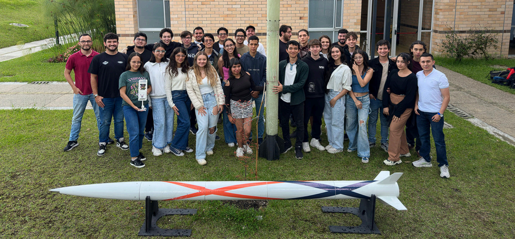
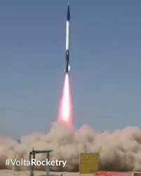
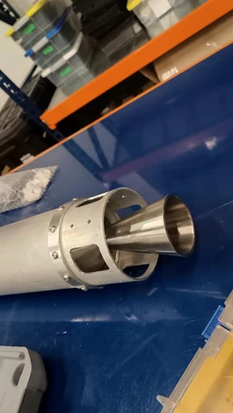
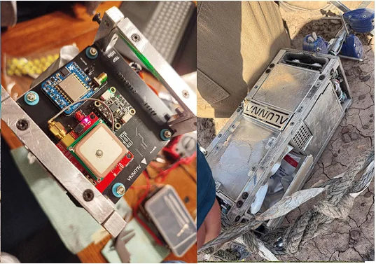
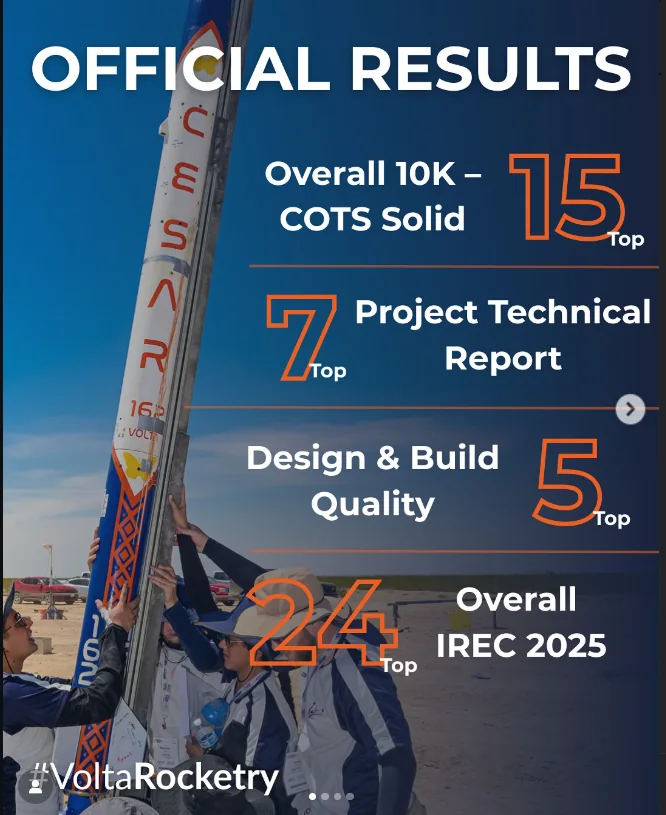
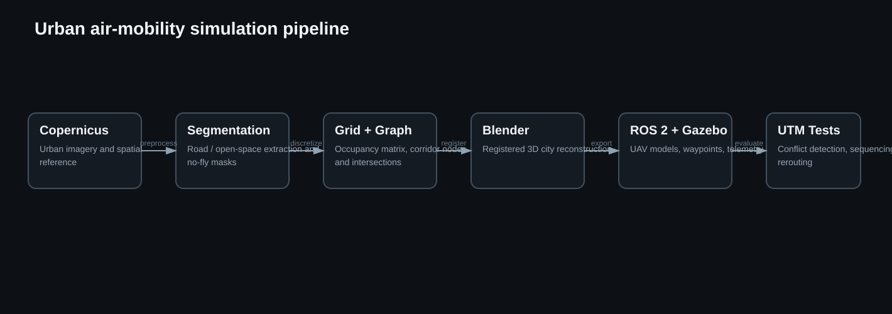
Copernicus imagery is segmented into a discrete occupancy model, candidate air corridors are represented as graph paths, the same spatial reference drives a Blender city reconstruction, and ROS 2/Gazebo UAVs execute waypoint sequences derived from the corridor matrix.
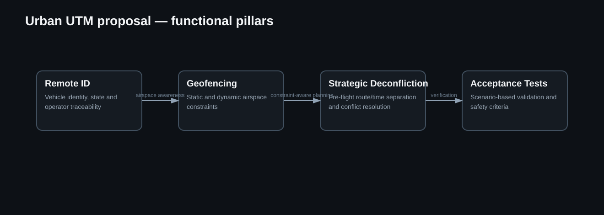
Lead contribution to the functional architecture and acceptance-test framing, followed by presentation of the concept to the Colombian Air Force.
The 2022 Design/Build/Fly mission centered on medical-supply transport under timed staging and payload constraints. The propulsion and electrical design therefore had to remain valid across changing payload configurations and short ground-turn windows.
Propeller–motor–battery matching used manufacturer / analysis curves, disk loading, climb margin, takeoff constraints and current limits to select a workable combination.
The power budget covered ESC, receiver, servos and avionics, with connector / wiring standards and quick-turn battery handling incorporated into staging procedures.
Led propeller–motor–battery matching and electrical architecture; authored thrust/current/voltage test cards; supported weight-and-balance updates and mission-readiness / staging procedures.
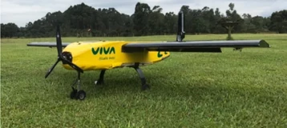
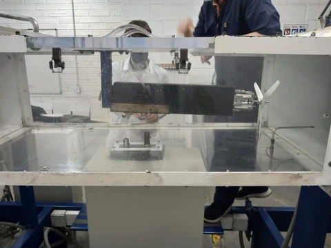
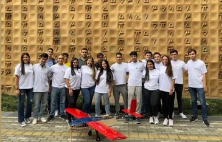
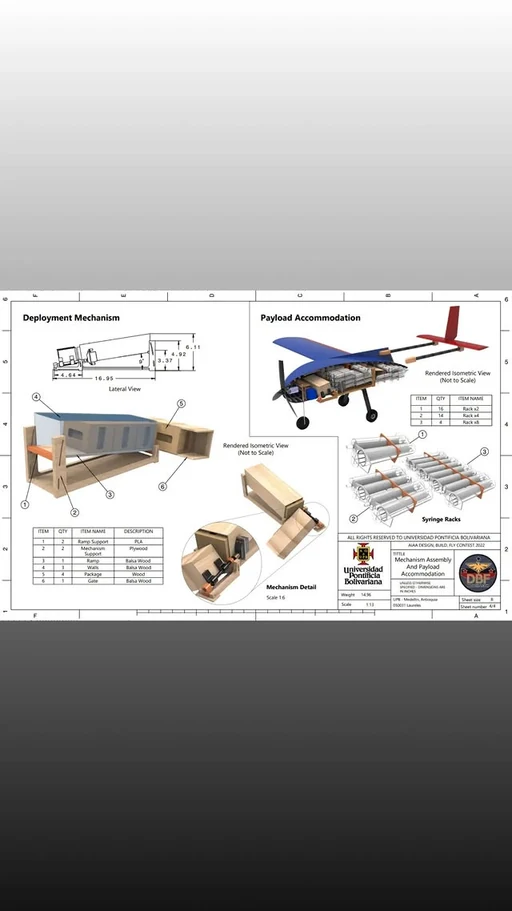
Conceptual system design for a high-throughput agricultural aircraft requiring coordinated electrical generation, essential-bus endurance and a high-flow spray system. The project linked aircraft mission analysis with subsystem sizing rather than treating power and payload independently.
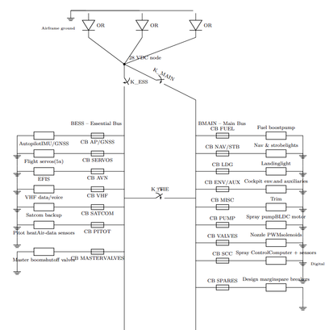
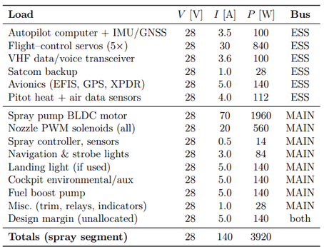
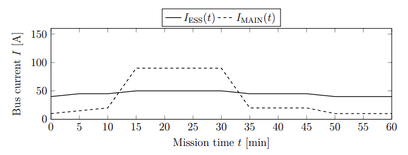
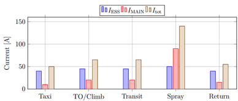
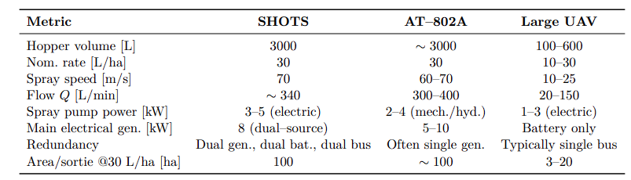
Design and build a non-powered glider below 1 kg for maximum glide time. The configuration used a canard layout, approximately 1.8 m span and lightweight balsa/composite construction.
Aerodynamic sizing, center-of-gravity and dihedral trade studies were followed by fabrication and iterative hand-launch testing. The portfolio records a second-place result with a 3.84 s average glide in the course competition format.
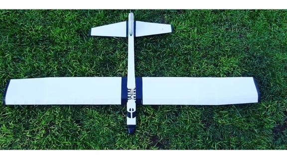
Educational convergent–divergent nozzle / combustion demonstrator built around safe instrumentation and controlled laboratory operation. The rig combined an inlet plenum, combustion section, injector manifold and nozzle with Arduino-based sensing and interlocks.
LM35 temperature sensing, MQ gas detection, humidity sensing, data acquisition and safety interlocks were used to support cold-flow and controlled hot-fire demonstrations. This portfolio documents the instrumentation and engineering outcome, not propellant recipes or hazardous operating procedures.
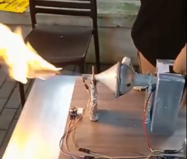
Build a scaled physical demonstrator of the PC-12 environmental-control distribution concept, emphasizing flow paths, actuated valving and operator modes rather than reproducing aircraft-certified hardware.
An instrumented wing section with flap, slat and spoiler actuation was used to study how surface configuration changes lift / drag behavior and stall margin. Arduino-driven mechanisms enabled repeatable deflection settings and a multi-point force setup supported data reduction across angle-of-attack sweeps.
ANSYS-based external-flow simulations were used to inspect pressure and flow structure around airfoil sections at elevated speed. The focus was on simulation setup, meshing / domain reasoning, aerodynamic interpretation and comparison of design trends rather than claiming wind-tunnel validation that was not supplied for this specific project.
Autonomous LEGO EV3 competition robot with rigid modular attachments, gearing, quick-swap tools and color / ultrasonic sensing. Mission routines were structured for repeatable field execution, with attention to fixture alignment and battery consistency.
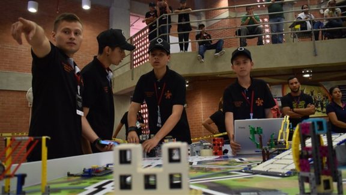